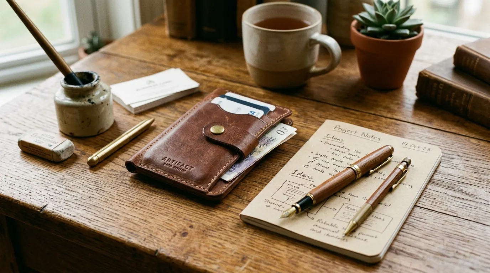

Apa yang Dimaksud dengan Merchandise Eksklusif Kategori Daily Essentials?
Merchandise eksklusif kategori daily essentials adalah kelompok produk corporate gift yang dirancang untuk mendukung aktivitas kerja sehari-hari penerima, namun tetap mempertahankan standar kualitas material dan desain yang lebih tinggi dibandingkan produk fungsional pada umumnya.
Konsep utama kategori ini adalah menghadirkan barang yang benar-benar digunakan secara rutin, bukan sekadar barang pajangan yang jarang disentuh setelah diterima.
Pendekatan ini penting karena barang yang sering digunakan memiliki peluang lebih besar untuk terus menampilkan identitas brand perusahaan kepada penerima maupun orang di sekitarnya dalam jangka waktu panjang.
Meski berfokus pada fungsi, kategori daily essentials tetap mempertahankan unsur eksklusivitas melalui pemilihan material premium, finishing yang rapi, serta desain yang lebih terkurasi dibandingkan produk fungsional standar yang biasa ditemukan pada souvenir massal.
Kombinasi ini membuat produk terasa istimewa meski digunakan dalam konteks aktivitas kerja yang sederhana.
Produk Apa Saja yang Termasuk Kategori Daily Essentials?
Produk yang termasuk kategori daily essentials meliputi tumbler premium, tas laptop elegan, dompet kartu multifungsi, alat tulis harian berkualitas tinggi, serta aksesoris kerja seperti gantungan kunci atau tempat kacamata dengan finishing premium.
Tumbler premium menjadi salah satu produk paling relevan dalam kategori ini karena penggunaannya yang hampir setiap hari, baik di lingkungan kantor maupun saat beraktivitas di luar. Material seperti stainless steel berkualitas tinggi dengan finishing warna solid memberikan kesan elegan meski fungsinya tetap sederhana sebagai wadah minum sehari-hari.

Tas laptop elegan juga menjadi pilihan populer karena relevansinya dengan kebutuhan kerja modern yang bergantung pada perangkat elektronik. Desain yang ringkas namun tetap terlihat profesional membuat produk ini cocok digunakan dalam berbagai situasi, baik untuk aktivitas kerja harian maupun pertemuan bisnis di luar kantor.
Selain itu, dompet kartu multifungsi dan alat tulis harian berkualitas tinggi turut melengkapi kategori ini sebagai barang pendukung yang praktis namun tetap menampilkan kesan premium melalui detail material dan finishing yang diperhatikan secara cermat.
Mengapa Kategori Daily Essentials Banyak Dipilih sebagai Corporate Gift?
Kategori daily essentials banyak dipilih sebagai corporate gift karena menawarkan keseimbangan antara nilai fungsional dan kesan eksklusif, sehingga barang yang diberikan benar-benar digunakan penerima secara berkelanjutan, bukan hanya disimpan sebagai koleksi.
Berbeda dengan merchandise dekoratif yang cenderung hanya dipajang, produk daily essentials memiliki peluang penggunaan yang jauh lebih tinggi karena relevansinya dengan aktivitas rutin penerima.
"Semakin sering digunakan, semakin besar pula peluang identitas brand perusahaan pemberi hadiah untuk terus terekspos dalam jangka waktu panjang, sehingga efektivitas branding menjadi lebih optimal dibandingkan barang yang jarang digunakan."
— Nazhima Nadine, Penulis Merchandise Kantor
Selain itu, kategori ini juga dinilai lebih fleksibel untuk berbagai level penerima, mulai dari karyawan internal hingga klien atau mitra bisnis eksternal. Sifatnya yang praktis membuat produk dalam kategori ini dapat diterima dengan baik oleh berbagai kalangan, tanpa terbatas pada preferensi gaya tertentu seperti pada beberapa kategori merchandise lain yang lebih spesifik.
Bagaimana Cara Memilih Produk Daily Essentials yang Tepat?
Cara memilih produk daily essentials yang tepat dilakukan dengan mempertimbangkan relevansi fungsi terhadap kebiasaan kerja penerima, kualitas material yang digunakan, serta konsistensi desain dengan identitas visual perusahaan pemberi hadiah.
Relevansi fungsi menjadi pertimbangan utama, misalnya memilih tumbler premium untuk penerima yang sering beraktivitas di luar kantor, atau tas laptop elegan untuk penerima yang sering melakukan perjalanan bisnis. Kesesuaian ini memastikan produk benar-benar digunakan secara rutin, bukan hanya diterima namun jarang disentuh setelahnya.
Kualitas material tetap perlu diperhatikan meski produk tergolong fungsional, karena material yang baik akan memengaruhi daya tahan barang dalam penggunaan jangka panjang sekaligus mempertahankan kesan eksklusif yang ingin ditampilkan.
Konsistensi desain dengan identitas brand, seperti warna dan detail logo yang proporsional, juga tetap menjadi faktor penting agar produk fungsional ini tidak kehilangan nilai representasi brand perusahaan.

Kesimpulan
Merchandise kantor eksklusif kategori daily essentials menjadi pilihan strategis bagi perusahaan yang ingin memberikan hadiah dengan nilai fungsional tinggi tanpa mengorbankan kesan elegan dan profesional.
Produk dalam kategori ini menawarkan peluang penggunaan yang lebih konsisten, sehingga eksposur identitas brand dapat berlangsung dalam jangka waktu yang lebih panjang dibandingkan merchandise yang bersifat dekoratif semata.